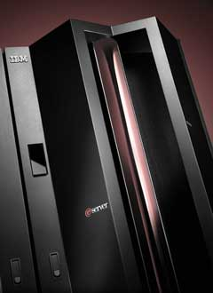
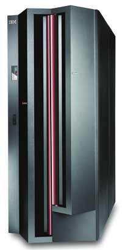
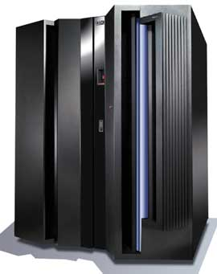

Олег Спиряев
Мэйнфреймы - это нечто большее, чем просто мощные и дорогие компьютеры. Они были и остаются основой обеспечения надежности, безопасности и целостности информационных систем. Главное, что вот уже несколько десятилетий эти компьютеры служат форпостом централизации функций и данных, так и не павшим под натиском распределенных вычислений. В наши дни центробежные силы контроля и управления в архитектурных решениях начинают менять свое направление и превращаться в центростремительные. Становится ясно, что без централизации ресурсов (а иначе говоря, консолидации) решить многие серьезные бизнес-задачи практически невозможно.
Среди базовых отличий мэйнфреймов от обычных серверов обычно называют то, что мэйнфреймы обеспечивают высокий уровень надежности благодаря избыточности аппаратного обеспечения, а операционные системы для них оптимизированы в первую очередь для пакетного режима работы и обработки транзакций. Тем не менее в корпорации IBM (http://www.ibm.com) полагают, что одна из важнейших причин признания рынком систем zSeries - поддержка ими таких нетипичных для мэйнфреймов задач, как приложения для Linux и Web. Кроме того, мэйнфреймы высоко ценят за их устойчивость по отношению к таким проблемам, как отказ центрального процессора. Они оснащаются специальным ПО, а их подсистемы памяти и передачи данных отличаются от тех, что используются в большинстве серверов. Способность мэйнфреймов обрабатывать гигантское количество транзакций в секунду обеспечила им широкое применение при решении таких задач, как управление сетями сбыта или ведение банковских счетов.
Когда в октябре 2000 г. в IBM приступили к ребрэндингу серверных систем, эти преобразования были представлены как реакция на растущие требования бизнеса в Интернете. Руководство корпорации объявило о своем намерении использовать на всех платформах такие открытые стандарты и продукты, как TCP/IP, HTML, Java, XML, Apache и о желании поддерживать быстро приобретающую популярность ОС Linux. Именно тогда мэйнфреймы получили название eServer zSeries, подчеркивающее нулевое (zero down time) время простоя этих систем.
Архитектура z/Architecture, на которой основаны системы zSeries, представляет собой новый стандарт производительности и интеграции - продолжение концепции сбалансированной системы в архитектуре S/390. Такие системы способны устранять узкие места, связанные с недостатком адресуемой памяти, предоставляя фактически неограниченные возможности 64-разрядной адресации и обеспечивая огромный запас для непредвиденных рабочих нагрузок и приложений растущего предприятия.
Компьютеры zSeries
Флагманом мэйнфреймов IBM стала серия компьютеров eServer zSeries 900, оптимизированная для задач электронного бизнеса. В состав серии входят 64-разрядные многопроцессорные системы с оперативной памятью 64 Гбайт и с пропускной способностью системы ввода-вывода и адаптеров сетевых каналов, составляющей соответственно 24 и 3 Гбайт/с. Производительность систем zSeries 900 превышает 2500 MIPS. Важнейший их компонент - 20-процессорный модуль MCM (Multi-Chip Module). Из его процессоров 16 предназначены для исполнения прикладных задач в SMP-режиме, а остальные выполняют такие системные функции, как управление вводом-выводом, восстановление при возникновении ошибок, криптозащита.
Каждая система может работать автономно или в составе кластера Parallel Sysplex совместно с другими компьютерами zSeries и рядом систем IBM S/390. Кластер обеспечивает высокую масштабируемость и исключительный уровень готовности. В кластеры на базе технологии Parallel Sysplex можно объединять до 32 систем zSeries 900.
В 15 логических разделах zSeries 900 независимо друг от друга могут работать различные ОС (z/OS, z/VM и Linux for zSeries), обращаясь к общим системным ресурсам.
Выпуск IBM недорогой системы начального уровня zSeries 800 (известной до того под кодовым названием Raptor - хищник) радикально изменил ценовые характеристики рынка мэйнфреймов. Эта система выпускается в нескольких вариантах: восемь моделей общего назначения и единственный в своем роде мэйнфрейм под полным управлением Linux. Различаются они прежде всего числом процессоров (от одного до четырех) и объемом оперативной памяти (от 8 до 32 Гбайт).
С выпуском zSeries 800 корпорация IBM начала предлагать высокую надежность и производительность технологии zSeries заказчикам, которым мэйнфреймы раньше были не по средствам. Кроме того, IBM впервые реализовала современную технологию кластеризации Parallel Sysplex на мэйнфреймах начального уровня. Напомним, что данная технология обеспечивает практически нулевое время простоя, высокую доступность приложений и надежность бизнеса за счет объединения нескольких мэйнфреймов в сетевой кластер.
Заказчики, использующие мэйнфреймы, все чаще добавляют новые Web-приложения в существующие инфраструктуры для экономии энергии, пространства и расходов на управление. Система zSeries 800 предназначена для бизнес-партнеров IBM, которым требуются варианты объединения серверов для заказчиков со средним уровнем финансовых возможностей. Новая система позволяет отказаться от дорогостоящих и недозагруженных серверных пулов, составленных из Web-серверов, серверов файлов, печати и электронной почты, за счет переноса всей нагрузки на один мэйнфрейм, упрощая таким образом администрирование и снижая затраты. Благодаря технологии виртуальных машин IBM z/VM система zSeries 800 может объединить от 20 до нескольких сотен серверов Sun или Intel на одной физической платформе.
Современная технология zSeries 800 предоставляет экономичную и гибкую среду для разработки, тестирования и эксплуатации приложений, переноса приложений с 32-разрядной на 64-разрядную платформу и новых рабочих нагрузок электронного бизнеса. В системе zSeries 800 нашли применение технологии самовосстановления и самоуправления, реализованные в компьютерах IBM, включая резервные мощности, кластеры Parallel Sysplex, одновременный ввод-вывод и автоматическое обращение в IBM при обнаружении неисправности системы. Одновременно с новыми мэйнфреймами IBM анонсировала специальную версию 64-разрядной ОС z/OS.e, которая предназначается для исполнения приложений электронного бизнеса, в том числе сервера приложений WebSphere, баз данных DB2 и приложений MQSeries.
Мэйнфрейм eServer zSeries 990 (под кодовым названием T-Rex - тираннозавр) представляет собой систему масштаба предприятия. Подобные системы предназначены для компаний финансового сектора и других отраслей, где требуется максимальная отказоустойчивость, защита информации и высокие вычислительные возможности. Новая система стала результатом четырех лет работы 1,2 тыс. разработчиков из IBM. Стоимость IBM eServer zSeries 990 начинается с 1 млн долл.
|  | T-Rex - IBM eServer zSeries 990.
|
Сервер обладает вдвое большими возможностями виртуализации и способностью делать примерно втрое больше работы, чем zSeries 900. Структура продукта значительно упрощена, а новый дизайн позволяет заказчикам наращивать мощность без отключения системы. Сердце zSeries 990 - многокристальный модуль MCM. Эта модель содержит в два раза больше процессоров и втрое превосходит по производительности zSeries 900 (производительность 32-процессорной системы zSeries 990 составляет 9000 MIPS). Кроме того, она обладает вчетверо большей памятью по сравнению с zSeries 900 - 256 Гбайт против 64 Гбайт. На zSeries 990 поддерживается до 30 логических разделов (LPAR), что вдвое превышает возможности zSeries 900. С помощью версии z/VM 4.4 заказчики могут быстро создавать и эффективно управлять сотнями виртуальных Linux-серверов в одном физическом корпусе. Расширенные технологии виртуализации IBM делают zSeries 990 хорошей платформой для консолидации, когда необходимо сократить стоимость групп серверов и затраты на их управление.
Побивая собственный рекорд безопасности IBM, 16-процессорная система zSeries 990 может обрабатывать 11 000 транзакций в секунду, проводимых по протоколу Secure Sockets Layer (SSL), - это на 57% больше, чем у 16-процессорной системы zSeries 900. Квитирование установления связи по протоколу SSL (то самое, что вызывает появление в нижней панели браузеров пиктограммы запертого замка) очень важно для транзакций электронного бизнеса и делает для компаний более безопасной обработку заказов в оперативном режиме. Возможность обработки большего количества транзакций SSL означает, что организации могут обслуживать больше заказчиков и за меньшее время достичь большего объема продаж.
Для тех заказчиков, которым нужна расширенная способность к подключению для новых задач электронного бизнеса, выполняемых на мэйнфрейме, система zSeries 990 предоставляет до 512 каналов ввода-вывода, что вдвое превышает возможности ее предшественника. Кроме того, теперь доступно до 16 HiperSocket, которые обеспечивают высокоскоростное соединение по протоколу TCP/IP между виртуальными серверами в пределах одной системы zSeries 990, что вчетверо превышает возможности zSeries 900. IBM также представила новую технологию под названием "логическая канальная подсистема", которая облегчает для заказчиков консолидацию нескольких мэйнфреймов в единую систему zSeries 990.
Система eServer zSeries 890 реализует современную технологию для упрощения ИТ-среды и новые ценовые условия для компаний среднего бизнеса. Мэйнфрейм z890 создан на основе технологии z990 и предлагает высокий уровень гибкости, виртуализации, автоматизации и масштабируемости. Старшая модель линейки z890 почти в два раза превосходит по вычислительной мощности старшую модель линейки z800, что стало результатом практически 100%-ного увеличения производительности каждого центрального процессора общего назначения. Но благодаря высокой степени гибкости мэйнфрейм z890 предлагается в том числе в виде моделей начального уровня, вычислительная мощность которых более чем на 30% меньше, чем у серверов начального уровня z800. Кроме того, IBM предлагает z890 в качестве единой модели с 28 уровнями вычислительной мощности, что позволяет заказчикам более точно соизмерять размер сервера со своими бизнес-требованиями.
|  | Мэйнфрейм IBM eServer zSeries 890.
|
Усовершенствования для z890 также включают поддержку до четырех логических подсистем каналов, до 1024 каналов ввода-вывода и улучшенную возможность соединения сетей, что помогает ИТ-специалистам упростить управление сложной инфраструктурой в многофункциональной среде.
Технология zAAPЧтобы обеспечить интеграцию Web-приложений на базе zSeries, создана новая технология zSeries Application Assist Processor (zAAP) - первая в отрасли среда выполнения Java, специально настроенная для работы с z/OS. Она предназначена для заказчиков, стремящихся интегрировать на базе одной серверной платформы Web-приложения на основе технологии Java с существующими базовыми бизнес-приложениями и данными. Технология zAAP позволяет увеличить общую системную производительность, упростить серверную инфраструктуру и повысить эффективность эксплуатации при одновременном снижении общих расходов на производство вычислений для приложений Java, развернутых на платформе zSeries. Расширенная с учетом поддержки zAAP функция изменения вычислительной мощности по запросу On/Off CoD (On/Off Capacity on Demand) обеспечивает получение дополнительных вычислительных ресурсов для кластерных систем Parallel Sysplex и рабочих нагрузок Java. Это позволяет максимально гибко реагировать на неожиданные изменения спроса. За упрощение инфраструктуры отвечает контроллер OSA Express Integrated Console Controller, который помогает избавиться от потребности в определенном периферийном аппаратном обеспечении и поддерживает до 120 соединений для сеанса консоли.
|
Автоматизация ПО для управления мэйнфреймами
Весной прошлого года корпорация анонсировала расширенный комплекс ПО IBM Tivoli, предусматривающий средства автоматизации процесса управления и мониторинга систем, работающих в режиме реального времени на основе инфраструктуры IBM eServer zSeries. Пакет ПО Tivoli OMEGAMON дает возможность заранее выявлять, изолировать и устранять проблемы с производительностью приложений по всей ИТ-инфраструктуре. Этот усовершенствованный комплекс продуктов включает технологию, освоенную IBM после приобретения компании Candle в 2004 г., и позволяет создать законченное решение Tivoli для управления системами для заказчиков, имеющих вычислительные среды на базе серверов zSeries.
Пакет Tivoli содержит всеобъемлющие предложения для мониторинга сред zSeries. Заказчики могут использовать стандартный пользовательский интерфейс для контроля своих систем на базе мэйнфреймов zSeries и в режиме упреждения управлять переменными рабочими нагрузками в сложных корпоративных средах. Теперь, имея целостное представление обо всех используемых в среде zSeries ресурсах, заказчики смогут уменьшить стоимость владения своей инфраструктурой, отказавшись от применения разрозненных архитектур и решений.
Создание высокопроизводительной среды с нулевой длительностью простоев подразумевает применение ряда технологий, таких, как управление рабочими нагрузками и решения автоматизации, которые помогают заранее корректировать инфраструктуру в соответствии с меняющимися потребностями. Решения для управления системами гарантируют оптимальную работу приложений за счет использования средств планирования вычислительной мощности, помогающих прогнозировать будущие технические потребности. К примеру, страховая компания может автоматически обнаруживать и устранять потенциальные проблемы в сети, управляя своей инфраструктурой на базе мэйнфреймов с помощью стандартного пользовательского интерфейса. При этом компания сокращает затраты и упрощает процесс управления большими центрами обработки данных, одновременно обеспечивая максимальную готовность и способность работать в условиях динамично меняющейся ситуации, например, при резком увеличении количества претензий в случае стихийного бедствия.
В состав решения IBM Tivoli OMEGAMON XE входят продукты, которые отвечают за мониторинг и управление ОС и подсистемами серверов zSeries, такими, как Linux, z/OS (включая z/OS Unix System Services and Parallel Sysplex), z/VM, Unix System Services, CICS, DB2, IMS, сети и системы хранения zSeries, WebSphere Application Server (WAS), WebSphere Integration Brokers и WebSphere MQ.
Аппаратная и криптографическая безопасность
Летом прошлого года мэйнфрейм среднего класса IBM eServer z890 наряду с тремя другими мэйнфреймами корпорации вошел в число серверов, прошедших высший уровень сертификации аппаратной безопасности - Common Criteria Evaluation Assurance Level 5 (EAL5). Полученная сервером сертификация подтверждает, что его структура логических разделов прошла тщательные испытания и проверку независимыми экспертами, подтвердив свою способность противостоять атакам и предотвращать появление скрытых каналов доступа, особенно в средах с высоким уровнем риска.
Стоит отметить, что сертификация EAL5 позволяет компаниям-заказчикам исполнять на одной системе z890, разбитой на разделы, множество приложений для z/OS, z/VM и Linux, работающих с конфиденциальными данными (включая программы расчета зарплаты, кадрового учета, электронной торговли, ERP- и CRM-системы), и при этом сохранять данные каждого приложения в безопасности и в изоляции от других. Действительно, архитектура системы z890 построена таким образом, чтобы исключить переход информации через границы логических разделов одной и той же системы.
IBM также объявила, что криптографический модуль IBM PCIX Cryptographic Coprocessor Security Module получил наивысшую сертификацию коммерческой безопасности, присваиваемую правительствами США и Канады, - Federal Information Processing Standard (FIPS) 140-2 Level 4. Эта сертификация свидетельствует, что модуль PCIX Cryptographic Coprocessor Security Module удовлетворяет требованиям к криптографическим модулям, применяемым в системах безопасности для защиты конфиденциальной информации или защищенной информации в компьютерных и телекоммуникационных системах.
При проверке на соответствие сертификации FIPS 140-2 Level 4 независимой испытательной лаборатории разрешается подвергать систему практически всем видам физических атак; кроме того, проводится проверка внутреннего ПО путем механической верификации математической модели. Модуль PCIX Cryptographic Coprocessor Security Module входит в состав функции PCIXCC для серверов IBM eServer z990 и z890.
IBM System z9
В конце прошлого года IBM начала поставки самой мощной компьютерной системы - мэйнфрейма IBM System z9, оснащенного средствами безопасности и виртуализации, которые, как заявляют в корпорации, позволят ему стать центральным элементом новой эры вычислительных технологий, основанных на коллективной работе. Результат трехлетнего проекта с бюджетом в 1,2 млрд долл., в котором приняли участие 5000 инженеров, разработчиков ПО, специалистов по технологиям и экспертов по безопасности из разных стран мира, мэйнфрейм IBM System z9 сконструирован как одна из самых открытых, надежных и защищенных вычислительных систем, когда-либо создававшихся для бизнеса. В частности, эта система:
- обрабатывает 1 млрд транзакций в день - в два с лишним раза больше, чем ее предшественник, мэйнфрейм T-Rex zSeries z990, в момент его выпуска;
- позволяет компаниям безопасно передавать шифрованные данные партнерам, поставщикам, в удаленные офисы и на территории архивного хранения, помогая защитить данные от потерь носителей и случайных нарушений конфиденциальности;
- поддерживает пять ОС мирового уровня, включая Linux и новую флагманскую ОС для мэйнфреймов - z/OS версии 1.7, позволяющую передавать данные в высокозащищенной среде между различными компьютерными платформами и виртуализовать сотни приложений, в том числе основанных на Java;
- обрабатывает до 6000 процессов установления защищенных онлайновых соединений в секунду - приблизительно втрое больше, чем ранее существовавшие системы, что помогает повысить качество обслуживания клиентов систем электронной торговли и увеличить интенсивность операций;
- способна противостоять известным угрозам безопасности.
|  | IBM System z9 - новое поколение мэйнфреймов.
|
Семейство IBM System z9 (z9-109) в настоящее время включает пять моделей, насчитывающих от 1 до 54 конфигурируемых процессоров. Ожидаемая производительность системы IBM System z9-109 с одним процессором в 1,35 раза выше производительности однопроцессорной системы z900. Планируется, что модель z9-109 будет масштабироваться от одного до 54 процессоров (против 32 процессоров для z990) и до 512 Гбайт памяти.
Основа системы z9, мультипроцессорный модуль MCM, - это конструкция с высокой плотностью вычислительной мощности, созданная с использованием самых современных полупроводниковых технологий и технологий сборки. Новый многопроцессорный модуль размером 95x95x8,5 мм, помещающийся на ладони, содержит 16 микросхем, установленных на 102-слойной стеклокерамической подложке, содержащей 5184 контакта ввода-вывода и 540 м соединительных проводников. В модуле применяются микропроцессоры, изготовленные с применением технологий медных соединений и "кремний на изоляторе", а общее число транзисторов в модуле превышает 3,5 млрд. Модули производятся на полупроводниковом заводе IBM в Ист-Фишкилл (шт. Нью-Йорк, США) и характеризуются высокой производительностью и надежностью, низким потреблением энергии.
Как отмечают представители корпорации, IBM System z9 представляет собой первую систему нового поколения мэйнфреймов, призванных упростить управление безопасностью и системными ресурсами в рамках всей корпоративной ИТ-сети. С этой точки зрения новый мэйнфрейм создан как единый центр управления. По их словам, система выводит возможности виртуализации и коллективной работы на принципиально новый для всей компьютерной отрасли уровень. Благодаря оптимизированным аппаратным, сетевым и программным ресурсам одна система IBM System z9 способна исполнять и защищать рабочие нагрузки, эквивалентные нагрузкам сотен распределенных серверов, занимая при этом во много раз меньше места.
Виртуализация на всех уровнях системы
Виртуализация позволяет компании объединить системные ресурсы в общие пулы для консолидированного управления и лучшего использования ИТ-среды за счет экономии на масштабе. В системе IBM System z9 реализованы технологии виртуализации ресурсов и управления нагрузками, созданные более чем за три десятилетия новаторских разработок в области виртуализации.
В одной системе IBM System z9 заказчик может создать сотни виртуальных серверов и до 60 логических аппаратных разделов - вдвое больше, чем в IBM eServer z990. Специализированные блоки IBM System z9 Application Assist Processor (zAAP) и Integrated Facility for Linux (IFL) позволяют экономически эффективно исполнять Java- и Linux-приложения на той же платформе, что и унаследованные приложения и основные СУБД бизнеса.
В сочетании с новой версией платформы IBM Virtualization Engine и приложением IBM Director система IBM System z9 позволяет управлять ресурсами других платформ.
IBM планирует реализовать в своем флагманском решении для виртуализации ресурсов хранения IBM TotalStorage SAN Volume Controller возможность подключения к средам Linux на платформе IBM eServer zSeries. Это даст возможность пользователям систем IBM eServer zSeries через конфигурации, управляемые решением IBM TotalStorage SAN Volume Controller, использовать устройства хранения данных, традиционно подключаемые к открытым средам, в том числе поддерживаемые решением SVC многоуровневые среды хранения.
Средства безопасности на всех уровнях сети
В системе IBM System z9 воплощен весь многолетний опыт корпорации в создании мэйнфреймов как систем с наивысшим уровнем безопасности. Мэйнфреймы IBM имеют мощные аппаратные средства безопасности, а каждая система оснащается взломоустойчивым хранилищем шифровальных ключей, данные в котором при попытке физического похищения автоматически стираются. IBM System z9 имеет все необходимое для реализации последовательных политик безопасности для серверов, данных, а теперь и для всей сети - в соответствии с требованиями бизнеса, с использованием централизованного управления ключами в операционной системе z/OS и других встроенных функций безопасности. Система имеет целый ряд новых функций, обеспечивающих высокоэффективную защиту от внутренних и внешних угроз безопасности.
Защита передаваемых данных
IBM System z9, используя имеющиеся в z/OS средства управления ключами и планируемое к выпуску новое решение для шифрования, позволит заказчикам шифровать данные для их более безопасной передачи партнерам, поставщикам, в удаленные офисы и на места архивного хранения через различные серверные платформы. В условиях, когда клиенты и законодательство предъявляют все более жесткие требования к обеспечению безопасности данных, эта технология позволит устранить нарушения безопасности, связанные с потерями лент с данными, которые в последнее время стали настоящим бичом финансовых компаний и электронной торговли.
Мощные функции шифрования
Новый мэйнфрейм поддерживает централизованное управление ключами шифрования, обеспечивая лучшее управление безопасностью данных в долгосрочной перспективе. Система IBM System z9 теперь имеет встроенную криптографическую функцию и усовершенствованный алгоритм хеширования (SHA-256). Она также поддерживает открытый стандарт шифрования Advanced Encryption Standard. Эти усовершенствования криптографической системы призваны повысить производительность, ускорить обработку транзакций и снизить затраты на вычислительную обработку.
Скорость обработки онлайновых транзакций
Особенность IBM System z9 - возможность настроить адаптеры Crypto Express2 PCI-X для работы в режиме аппаратных ускорителей, что позволяет увеличить скорость безопасной передачи данных через Интернет по широко применяемому протоколу Secure Sockets Layer (SSL). При настройке обоих адаптеров PCI-X для работы в режиме аппаратных ускорителей блок Crypto Express2 способен обслуживать до 6 тыс. квитирований SSL в секунду. Это соответствует приблизительно трехкратному повышению производительности по сравнению с функцией PCICA или существующей функцией Crypto Express2 модели z990 в расчете на одну плату. За счет этого удается быстрее осуществлять транзакции электронной торговли, требующие интенсивного обмена данными в защищенном режиме.
Простая система Интернет-безопасности
В условиях, когда финансовые компании, правительственные ведомства и компании-производители отказываются от дорогостоящих частных сетей и все больше используют Интернет для расширения своей партнерской экосистемы, им необходимо обеспечить безопасность важнейших для бизнеса приложений z/OS при работе в Интернете. Новая функция z/OS 1.7 - Application Transparent Transport Layer Security - позволяет компаниям внедрять стандартные Интернет-протоколы шифрования TLS или SSL без изменений в основных приложениях. Это облегчает применение мощных средств шифрования, которые предоставляет мэйнфрейм, для защиты данных и транзакций среды z/OS при их передаче через Интернет во избежание перехвата данных в сети.
Средства сетевой безопасности Cisco
Cisco и IBM предоставляют полный комплекс взаимодополняющих решений для сетевой безопасности, позволяющий распространить защиту данных на всю сеть и обеспечить безопасность обработки данных на всех этапах. Стратегия Cisco Self Defending Network дополняет сервисы обнаружения вторжений Intrusion Detection Services (IDS) среды z/OS. Средства z/OS IDS обнаруживают как известные, так и неизвестные и нераспознанные атаки, используя подход на основе политик. z/OS способна распознавать действия, указывающие на атаку типа "отказ в обслуживании", и предупреждать о них до того, как атака приведет к ухудшению работы системы. Считается, что централизованное управление ключами помогает упростить решения заказчиков в области безопасности и создать основу для защиты данных в долгосрочной перспективе.
Постоянная готовность и надежность для всей сети
Новая функция резервных мощностей для специализированных процессоров расширяет средства обеспечения готовности IBM System z9, призванные исключить плановые перерывы в работе на техническое обслуживание и обновление системы. Это еще больше повышает легендарную надежность мэйнфрейма. При вдвое большем максимальном объеме памяти, чем у z990, IBM System z9 способна поддерживать еще более масштабные среды защищенной обработки транзакций. Дело в том, что повышенная готовность процессорных "книжек" сокращает количество плановых простоев. При правильном планировании компания может восстановить вычислительные ресурсы без простоя даже в случае отказа процессорной "книжки". Предусмотрена также возможность без остановки системы добавлять и ремонтировать память и выполнять некоторые операции обслуживания драйверов. Заметим, что самая большая (54-процессорная) система IBM System z9 поддерживает почти вдвое больше памяти, чем z990 (32-процессорная), что обеспечивает возможность масштабирования в ответ на растущий спрос.
Новая функция z/OS - TCP/IP Sysplex Load Balancing Advisor - позволяет оптимизировать производительность IP-сети, связывающей кластер серверов, координируя работу системы с коммутаторами, например, производства Cisco. Это улучшает процессы выравнивания нагрузки, позволяя защитить загруженные серверы и выделить ресурсы тем задачам, которые необходимы для бизнеса. Максимальная пропускная способность каналов ввода-вывода в системе IBM System z9 возросла на 80%. В IBM System z9 введены важные возможности расширенной адресации ввода-вывода с множественными наборами субканалов для томов параллельного доступа.
Открытая интеграция бизнеса
Развивая концепцию "тотальной системы", IBM System z9 соединяет современные серверные технологии с новейшими версиями ключевых пакетов связующего ПО IBM. Ряд продуктов IBM WebSphere был переработан для повышения устойчивости бизнеса и интеграции на принципах сервисно-ориентированной архитектуры. Так, WebSphere Application Server for z/OS V6, WebSphere Portal for z/OS V5 и WebSphere MQ for z/OS V6 как платформа для сервисно-ориентированной архитектуры (SOA) предоставляют расширенную поддержку Web-сервисов и J2EE 1.4-совместимых технологий. Пакет WAS V6 был оптимизирован для максимально эффективного использования процессора поддержки приложений (zAAP) системы IBM System z9, что дает преимущества с точки зрения соотношения цены и производительности тем клиентам, которые стремятся интегрировать на мэйнфрейме существующие базовые приложения и данные с Java-технологиями.
Новые усовершенствования внесены в один из самых широко применяемых в мире программных продуктов категории связующего ПО - CICS Transaction Server. CICS Transaction Server V3.1 и CICS Transaction Gateway V6.0 предоставляют расширенные возможности интеграции приложений и повышенную производительность компаниям, перед которыми стоит задача построения гибкой сервисно-ориентированной архитектуры, опирающейся на существующие базовые активы. IBM также предлагает быстро растущий ассортимент инструментальных средств для разработки приложений и управления эксплуатацией, таких, как пакет WebSphere Developer for z/OS, которые помогают выстраивать и обслуживать эти новые модульные решения для zSeries. Решение IBM Communication Controller for Linux on zSeries помогает проводить миграцию, обеспечивая эксплуатационную совместимость с существующими средами на базе 3745/6. IBM System z9 поддерживает z/OS, Linux, z/VM, z/VSE и z/TPF, что дает заказчикам возможность поддерживать на одной системе сотни приложений. Портфель решений для Linux на IBM System z9 включает более 700 приложений от 260 независимых разработчиков ПО.
Модификация ОС
Теперь ОС для мэйнфреймов z/OS включает сертифицированную функцию шифрования данных, которая позволяет и дальше повышать безопасность конфиденциальных данных и транзакций в глобальных сетях. Технология шифрования Public Key Infrastructure (PKI) в составе ОС IBM eServer zSeries z/OS Version 1 Release 5 (V1R5) и выше получила сертификат соответствия требованиям Identrus (http://www.identrus.com)- компании, выпускающей и поддерживающей цифровые удостоверения на базе общемировых отраслевых, банковских и технологических стандартов.
Сервисы PKI в z/OS позволяют заказчикам IBM - включая компании розничной торговли, банки, компании, выпускающие кредитные карты, - создавать собственные службы выпуска цифровых сертификатов. Это позволяет обойтись без издающего сертификаты "посредника", который может взимать плату за каждую операцию. Для компаний, проводящих ежедневно тысячи транзакций по всему миру, это означает существенную потенциальную экономию. Кроме того, уменьшается количество инстанций, через которые проходят конфиденциальные данные, в результате чего банки получают больший контроль над информацией.
По мнению представителей IBM, систематическое применение цифровых сертификатов обеспечивает банкам более эффективное управление рисками для противодействия потерям данных и мошенничеству. В корпорации ожидают, что функциями шифрования PKI будет пользоваться все больше банков, что увеличит число высокозащищенных финансовых транзакций во всем мире. При этом z/OS предоставляет заказчикам функции безопасности и экономию именно тогда, когда они больше всего в них нуждаются.
Встроенные в z/OS версии 1.5 и выше криптографические сервисы безопасности на базе PKI позволяют организовать управление жизненным циклом цифровых сертификатов в компании в соответствии с установленными политиками безопасности. С их помощью банки, вошедшие в сеть Identrus, могут оперативно выпускать и отзывать цифровые сертификаты при обнаружении новых рисков или при изменении ситуации на мировых финансовых рынках.
Банковская идентификационная система Identrus может найти применение и в других отраслях, где требуется конфиденциальный и безопасный обмен данными. Поскольку IBM z/OS используется компаниями розничной торговли, производителями фармацевтических средств и страховыми компаниями, область потенциального применения этой технологии очень широка. По мнению экспертов, в условиях, когда все больше финансовых учреждений сталкиваются с уязвимостями физических систем безопасности, такими, как утрата лент с данными, появление решения для обмена данными с использованием цифровых удостоверений - это именно то, что нужно потребителям и компаниям.
В криптографической системе PKI каждый банк с помощью определенного алгоритма создает уникальную пару открытый ключ/секретный ключ. Главная сертифицирующая служба (в данном случае Identrus) подтверждает аутентичность открытого ключа, предоставляя банку цифровой сертификат. Затем банк публикует сертификат открытого ключа в открытом каталоге. Когда банку необходимо перевести деньги другому банку-участнику системы, он находит открытый ключ получателя в каталоге и отправляет данные транзакции, зашифрованные открытым ключом получателя и подписанные своим собственным открытым ключом. Расшифровать данные транзакции может только банк-адресат, используя свой секретный ключ. Этот эффективно защищенный процесс позволяет шифровать любые сообщения, обеспечивая их конфиденциальность и аутентификацию - возможность для получателя удостовериться в правильности источника.
Компания Identrus выпускает глобальные удостоверения для финансовых организаций, использующих технологию глобально совместимых цифровых удостоверений Identrus RuleSet. Применение этих удостоверений позволяет снизить риски ведения бизнеса в Интернете и оптимизировать проведение деловых транзакций. Банк и его заказчики могут использовать систему Identrus для взаимодействия с другими пользователями Identrus и их финансовыми учреждениями. С помощью встроенных в z/OS средств PKI и шифрования банк может создавать и выдавать своим клиентам цифровые удостоверения, подлинность которых другие пользователи сети Identrus могут проверять в реальном времени.
Усовершенствованные средства шифрованияПрограммный компонент Encryption Facility for z/OS version 1.1 обеспечивает шифрование/дешифрование файлов определенных форматов в среде z/OS. Этот компонент использует средства централизованного управления ключами на основе программных функций z/OS и аппаратных функций мэйнфреймов IBM System z9 и серверов zSeries для шифрования данных, хранящихся на внешних лентах и дисковых массивах, что критически важно для компаний, которым необходимо защищать свои данные при передаче их партнерам или удаленным подразделениям. Во многих случаях регулирующие нормы предписывают шифровать данные, помещаемые на длительное хранение, а также переносимые в мэйнфрейм или из него. В состав продукта IBM Encryption Facility for z/OS, работающего на всех современных версиях z/OS, входят две программные функции, использующие аппаратные возможности мэйнфреймов IBM. Функция Encryption Services Feature for Tape Transfer обеспечивает шифрование/дешифрование данных на лентах, после чего их можно безопасно передавать в другие подразделения или организации. Благодаря инфраструктуре шифрования с открытым ключом (PKI) партнеры могут дистанционно дешифровать данные, хранящиеся на лентах мэйнфрейма. Для поддержки обмена шифрованными данными с партнерами, у которых нет мэйнфрейма с установленной z/OS, IBM предлагает Java-программу, которая позволяет дешифровать данные на ленте, поступившей с мэйнфрейма, и зашифровывать данные, передаваемые на мэйнфрейм с z/OS. DFSMSdss Encryption Feature for Archival Dump Data Storage ориентирована на заказчиков, использующих утилиту DFSMSdss из состава z/OS для переноса данных на ленту. IBM планирует реализовать эту функцию для шифрования большого количества файлов, помещаемых на архивное хранение. Помимо шифрования, можно будет сжимать данные, уменьшая тем самым количество ленточных картриджей, подлежащих хранению и администрированию. В 2006 г. IBM планирует реализовать усовершенствования для адаптера IBM System z9 Crypto Express2, которые позволят дистанционно загружать исходные ключи в банкоматы, кассовые терминалы и другие подобные устройства, в которых распределяемые ключи защищаются с помощью технологий шифрования с открытым ключом. Дистанционная загрузка исходных ключей позволит создавать решения, более безопасные и более экономически эффективные по сравнению с локальной их загрузкой специальными курьерами. Предполагается, что эти усовершенствования позволят распределять исходные ключи шифрования для инфраструктур с открытым ключом в соответствии с требованиями разрабатываемого в настоящее время стандарта ANSI X9.24-2. Кроме того, планируется реализовать улучшенные методы обмена ключами шифрования стандартов DES и Triple DES с криптографическими системами других поставщиков. |